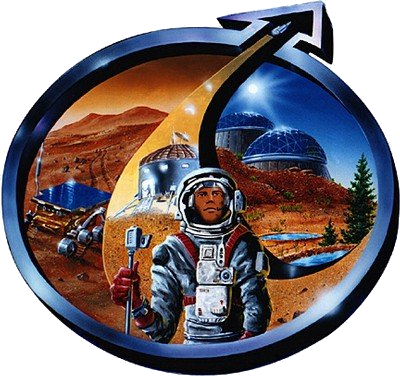
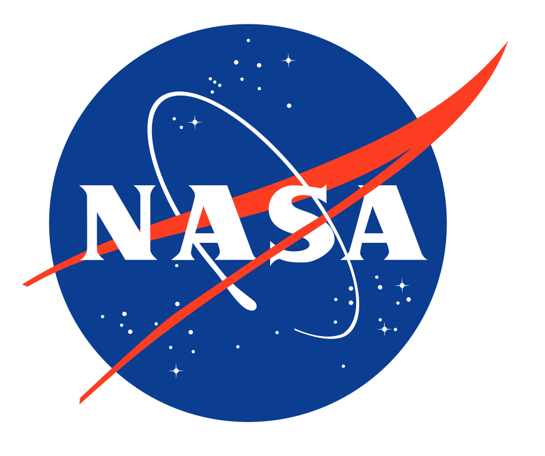

|  Mars Society |
To organizacja non-profit powstała w 1998 roku z inicjatywy dr. Roberta Zubrina, inżyniera z koncernu Lockheed Martin. Głównym celem The Mars Society jest eksploracja i przyszłe osadnictwo na Marsie.
Konferencja założycielska odbyła się na Uniwersytecie Kolorado, z udziałem kilkuset osób z czterdziestu krajów, w tym z Polski. Oprócz spraw organizacyjnych omawiano kwestie techniki kosmicznej i nauk okołomarsjańskich, zagadnienia polityczne, ekonomiczne i prawne, a także kulturalne i narodowościowe aspekty badania i zasiedlania Marsa.
Cele te mają być osiągnięte poprzez informowanie i popularyzowanie wiedzy o Marsie, technice potrzebnej do jego osiągnięcia i naukach stosowanych, takich jak psychologia, geologia, budownictwo czy rolnictwo. Prace eksperymentalne i badawcze obejmują testowanie habitatów (pomieszczeń mieszkalnych dla pierwszych wypraw załogowych). Budowane są prototypy łazików oraz hermetycznych pojazdów marsjańskich dla ludzi. Inne projekty dotyczą balonów w marsjańskiej atmosferze oraz życia ssaków w obniżonej grawitacji.
Członkami Mars Society jest wielu inżynierów i managerów NASA i JPL (Jet Propulsion Laboratory), ludzi kultury, mediów i najróżniejszych zawodów. Istnieją oddziały narodowe. Są to formalnie niezależne organizacje pozarządowe, zjednoczone wspólną wizją. W zasobach Mars Society jest ponad trzysta prac teoretycznych, ogłaszanych głównie na dorocznych kongresach. Czytaj więcej. |
|  NASA |
28 września 2007 r. administrator NASA Michael D. Griffin stwierdził, że NASA zamierza wysłać człowieka na Marsa do 2037 r., a w 2057 r.: „Powinniśmy obchodzić dwudziestolecie lądowania człowieka na Marsie”.
Kolejnym nawiązaniem do ewentualnej załogowej wyprawy na Marsa było przemówienie prezydenta Baracka Obamy wygłoszone 15 kwietnia 2010 w Centrum Kosmicznym imienia Johna F. Kennedy’ego. Obama przedstawiając najważniejsze punkty nowej polityki podboju kosmosu wymienił Marsa jako możliwy cel przyszłych wypraw załogowych. Według niego do roku 2025 Stany Zjednoczone dysponować będą statkiem umożliwiającym lot poza orbitę Księżyca. Po roku 2030 możliwe będzie wysłanie człowieka na orbitę Marsa, a w dalszej przyszłości lądowanie na jego powierzchni. Czytaj więcej. |
SPACEX |
Amerykańskie przedsiębiorstwo przemysłu kosmicznego, założone w roku 2002 przez Elona Muska. Jego celem jest budowa silników rakietowych i rakiet nośnych oraz statków kosmicznych, w tym także załogowych. Kluczem do osiągnięcia sukcesu ma być znaczne zmniejszenie kosztów wynoszenia ładunku na orbitę. Przede wszystkim, SpaceX projektuje i buduje serię rakiet orbitalnych Falcon i statków kosmicznych Dragon.
Siedziba, montownia rakiet i biuro projektowe znajdują się w Hawthorne (hrabstwo Los Angeles) w Kalifornii. Silniki i inne duże elementy testowane są w McGregor w stanie Teksas. Ponadto firma posiada kilka biur regionalnych na terenie USA, a w styczniu 2015 r. ogłoszono plan utworzenia w Redmond w stanie Waszyngton biura projektowego na potrzeby planowanej produkcji satelitów telekomunikacyjnych. Czytaj więcej. |
 ESA |
Europejska Agencja Kosmiczna. międzynarodowa organizacja krajów europejskich, której celem jest eksploracja i wykorzystanie przestrzeni kosmicznej.Siedziba organizacji znajduje się w Paryżu. Agencja została powołana na mocy konwencji z 30 maja 1975. Mimo że sama konwencja weszła w życie dopiero 30 października 1980, organizacja zaczęła działać już w 1975 roku. Powstała z połączenia jej poprzedniczek – Europejskiej Organizacji Badań Kosmicznych (ESRO) i Europejskiej Organizacji Rozwoju Rakiet Nośnych (ELDO).ESA zatrudnia ok. 1900 osób, a jej budżet na rok 2012 wynosi 4 mld euro. Główny ośrodek ESTEC (European Space Research and Technology Centre) znajduje się w Noordwijk aan Zee w Holandii, Instytut Badawczy ESRIN (European Space Research Institute) mieści się we Frascati (Włochy), zaś siedzibą Centrum Operacji Kosmicznych ESOC (European Space Operations Centre) jest niemieckie miasto Darmstadt. W Niemczech (Kolonia) znajduje się też ośrodek szkolenia astronautów EAC (European Astronauts Centre). Kosmodrom należący do ESA znajduje się w Kourou w Gujanie Francuskiej, gdzie znajduje się Gujański Ośrodek Kosmiczny. Położenie blisko równika sprzyja zadaniu wysyłania na orbitę sztucznych satelitów. Czytaj więcej. |
 ISRO |
Indyjska Organizacja Badań Kosmicznych, ISRO – indyjska państwowa agencja kosmiczna. Jej siedziba mieści się w Bangalore, zatrudnia ok. 20 tysięcy pracowników, z budżetem ok. 65 mld rupii indyjskich (ok. 1,3 mld USD według kursu z października 2008 roku). Zadaniem ISRO jest rozwój technologii związanych z Kosmosem oraz ich wykorzystanie do rozwoju Indii. Poza wynoszeniem satelitów indyjskich, ISRO oferuje również innym krajom swoje usługi w zakresie wynoszenia ładunków na orbitę. Wykorzystywane są do tych celów rakiety nośne: PSLV (Polar Satellite Launch Vehicle) do wynoszenia na orbity polarne oraz GSLV (Geosynchronous Satellite Launch Vehicle) do wynoszenia na orbity geostacjonarne. Czytaj więcej. |